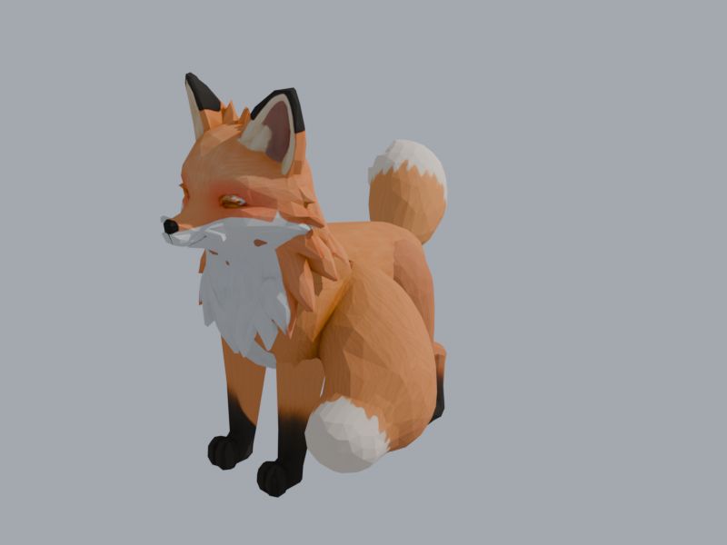
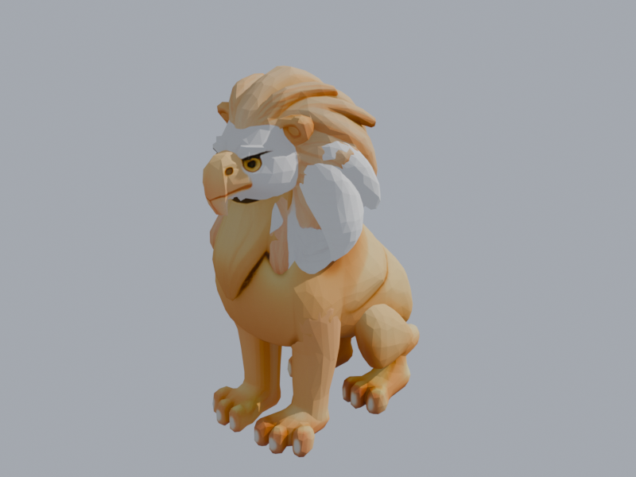
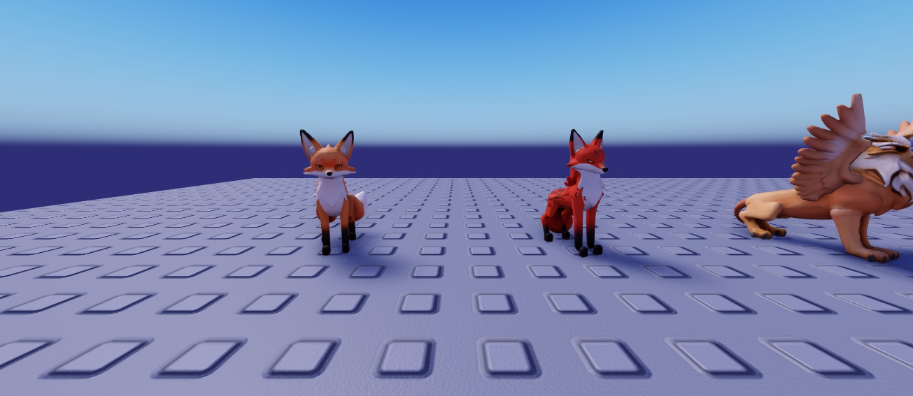
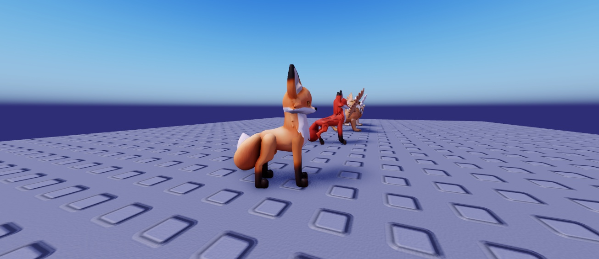
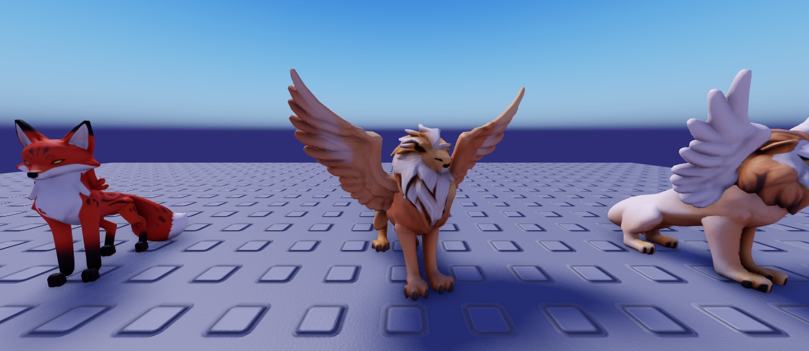
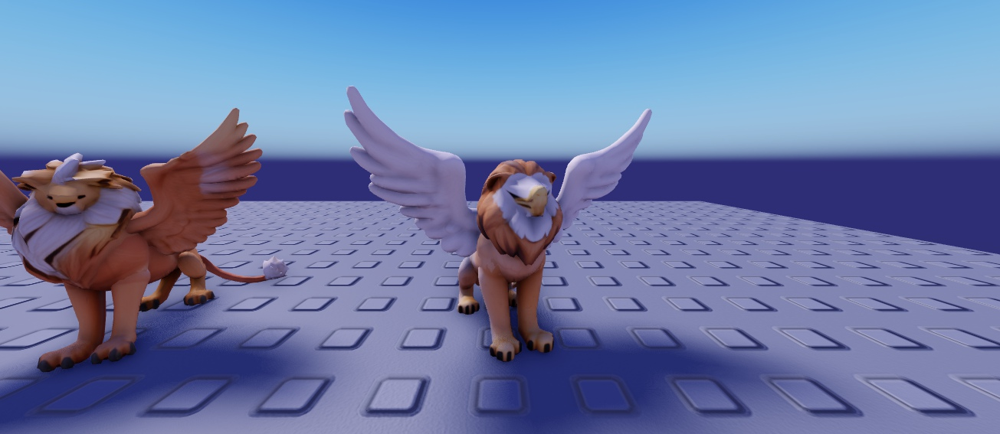

Les deux défauts que tu as vus venaient des modèles 3D eux-mêmes, pas des détails de surface : le Renard avait deux queues (une derrière, une enroulée contre l'avant du corps, celle qui « sort de l'épaule »), et le Griffon n'avait que deux petits paquets de plumes collés au cou à la place des ailes. Je les regénère, puis je leur refais un squelette.

Renard actuel : la 2e queue, enroulée devant (en bas)

Griffon actuel : les « ailes » blanches collées au cou

De face : v1 (orange, à gauche) · v2 (rouge à taches sombres, à droite)

De côté : v1 au premier plan (queue qui retombe derrière), v2 derrière (longue queue tendue)

v1 : raté, tête de lion au lieu d'une tête d'aigle

v2 : tête d'aigle et crinière, grandes ailes blanches, corps de lion. Mon choix.